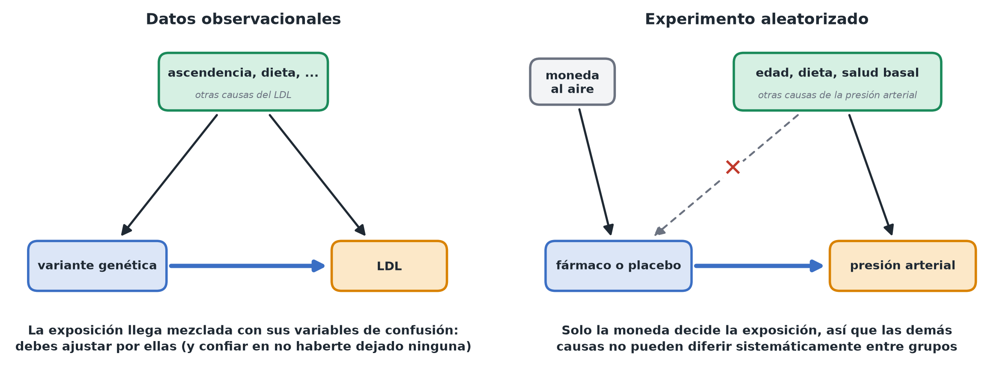

Experimentos vs. datos observacionales
En pocas palabras: si quieres hacer una afirmación causal, cómo se recogieron los datos importa tanto como cualquier análisis que hagas después.
El patrón oro: los experimentos aleatorizados
Theo realiza un ensayo en el que los pacientes se asignan al azar al fármaco o al placebo, algo comparable a lanzar una moneda que no depende de las demás características de los pacientes. Esto es lo que hace fiable la comparación: por diseño, los dos grupos deberían ser similares en todo lo demás (edad, dieta, salud de partida, medido o no), porque la asignación no dependió de nada de eso. Cualquier diferencia en el resultado puede atribuirse entonces al fármaco.
Por eso mismo los experimentos siguen siendo la herramienta más sólida para las afirmaciones causales incluso cuando son pequeños o imperfectos: el trabajo difícil lo hace la propia aleatorización, no un análisis ingenioso posterior.
El caso más difícil: los datos observacionales
Nadie puede asignar al azar un genotipo a los pacientes de Mia: queda fijado en la concepción. Además, portadores y no portadores pueden diferir en ascendencia, en dieta y entorno, y en quién se hizo la prueba en primer lugar (por ejemplo, a las personas con colesterol alto o con antecedentes familiares se les hace con más frecuencia). Así, cualquier diferencia de LDL observada podría deberse en parte (o por completo) a esas otras diferencias entre portadores y no portadores, y no a la variante en sí. Esto es la confusión (confounding); consulta Diagramas causales. (La genética tiene un ingenioso atajo para algunos de estos casos, llamado aleatorización mendeliana, que queda fuera de este curso.)
Con datos observacionales, una afirmación causal exige un acto de fe adicional e inverificable: que has medido y tenido en cuenta todo lo que difiere entre los grupos y que además afecta al resultado. Es una posición mucho más débil que la de un experimento bien ejecutado, incluso con un análisis sofisticado.

Qué significa esto en la práctica
- Si tu exposición se asignó al azar (un experimento de verdad): no necesitas buscar variables de confusión; la comparación directa y sencilla entre grupos ya es una estimación causal válida. Aun así, puedes ajustar por algunas variables previas al tratamiento, pero solo para afinar la precisión de tu estimación, no para «arreglar» una confusión que la aleatorización ya resolvió. Es fundamental no ajustar nunca por nada medido después de la asignación: eso puede anular el beneficio de haber aleatorizado.
- Si no se asignó al azar (observacional): necesitas construir un diagrama causal y ajustar por el conjunto adecuado de variables, y aun así debes decir de forma explícita que la conclusión descansa en el supuesto de que no se pasó por alto nada importante.
- Si combinas varios estudios (metaanálisis): la estimación combinada solo es tan causal como los estudios que reúne. Combinar estudios observacionales da una estimación más precisa de la misma cantidad posiblemente confundida, así que mantén separados los experimentos y los estudios observacionales.
Una comprobación
Pregúntate: ¿alguien (o algo ajeno al control de cualquiera) asignó esta exposición o tratamiento, con independencia de todo lo demás sobre las unidades? Si es así, estás en terreno experimental. Si las personas, la naturaleza o las circunstancias «eligieron» la exposición en función de sus otras características, estás en terreno observacional y las afirmaciones causales requieren mucho más cuidado.